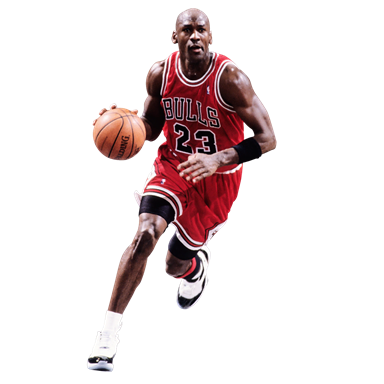

2006年入選中國《環球時報》「影響近現代中國的50個外國人」的唯一運動員及唯一黑人[6]。
6次NBA總冠軍：1991，1992，1993，1996，1997，1998
5次NBA最有價值球員：1988，1991，1992，1996，1998
6次NBA總決賽最有價值球員：1991，1992，1993，1996，1997，1998
10次NBA得分王：1987, 1988, 1989, 1990, 1991, 1992, 1993, 1996, 1997, 1998
連續七屆NBA得分王：1987 - 1993
3次NBA抄截王：1988, 1990, 1993
1次NBA最佳防守球員：1988
1次NBA最佳新秀：1985
1次NBA最佳新秀陣容：1985
11次NBA最佳陣容：
第一隊：1987，1988，1989，1990，1991，1992，1993，1996，1997，1998
第二隊：1985
9次NBA最佳防守陣容：
第一隊：1988，1989，1990，1991，1992，1993，1996，1997，
14次NBA明星賽：1985，1986（因傷未能出賽），1987，1988，1989，1990，1991，1992，1993，1996，1997，1998，2002，2003
3次NBA明星賽最有價值球員：1988，1996，1998
2次NBA灌籃大賽冠軍：1987, 1988
NBA50大巨星：1996